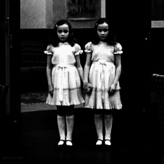

 Una feliz familia vivía en un rumbo muy cercano a una transitada carretera, debido a esto la joven madre las acompañaba diariamente al colegio y caminaban las tres tomadas de la mano, teniendo especial cuidado al toparse con la mencionada carretera, las pequeñas hasta el momento no tenían permiso de cruzar solas. Uno de tantos días la madre recibió en su celular una llamada urgente del trabajo la cual tuvo que atender, le exigían su presencia de inmediato, por lo cual se vio en la necesidad de dejar que las gemelas continuaran el camino solas. Con mucho pesar despidió a las niñas, dando indicaciones para no se soltarse de la mano y tener mucho cuidado al cruzar. Las dos pequeñas siguieron las instrucciones de su madre, miraron a ambos lados de la carretera, y al ver que estaba libre cruzaron. Apenas se giraba la madre para cambiar de rumbo, cuando se escuchó un golpe muy fuerte a sus espaldas, volteó de inmediato para ver con terror que sus hijas estaban debajo de un camión, fueron atropelladas perdiendo la vida en al instante. El pesar duró mucho tiempo, pero transcurridos cuatros años, la madre dio a luz de nuevo gemelas, estas era muy parecidas a sus fallecidas hermanas, lo cual le hacía tener presente aquel fatal accidente. Esta vez tenía una terrible obsesión por su cuidado y no les permitía estar cerca de ningún peligro, en especial aquella temida carretera. Pero no podía estar detrás de ellas las 24 horas, y un día, se vieron muy cercanas al peligroso lugar, decididas a cruzar vieron hacia los dos lados, no había ningún auto, con un paso en el asfalto, fueron tomadas del hombro bruscamente por su madre, quien lloraba desconsoladamente, diciendo –No crucen- a lo cual recibió una respuesta inesperada de las dos pequeñas: -No pensábamos cruzar, ya nos atropellaron una vez, no volverá a suceder…-